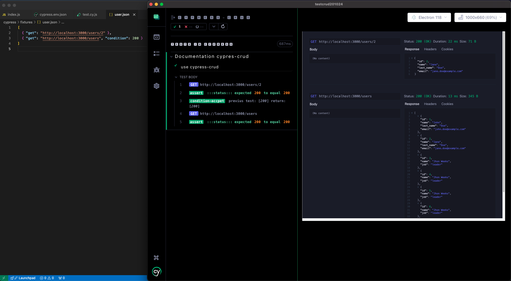
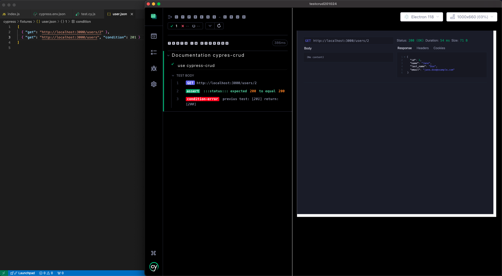
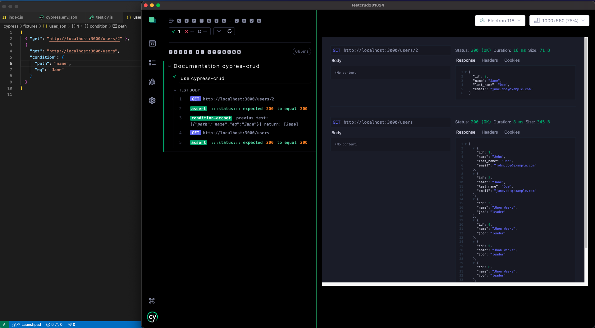
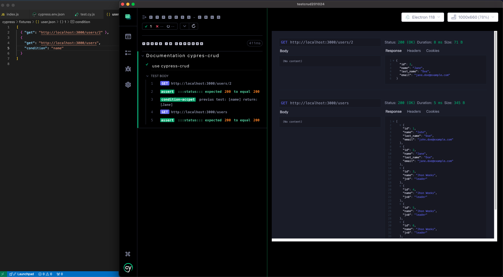

Condition use cypress-crud
The condition only allows the next test to execute if the previous condition was accepted:

condition for status:

condiction for result value path:

condiction for path exist in response:
